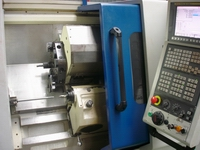

{kind=link}
La aplicación del CNC a toda maquina de mecanizado por arranque de viruta es una consecuencia de la necesidad de la industria por bajar costes de producción; para lo cual se precisan máquinas capaces de realizar de manera automática los procesos de mecanizado y a su vez flexibles para adaptarse con rapidez a los cambios de la producción.
Las máquinas CNC gracias a los adelantos de electrónica aplicada al control de procesos y máquinas hacen posible la automatización y flexibilidad de la producción; con la consiguiente disminución de costes.
Cuando las series de producción son altas las máquinas automatizadas dan costes menores que máquinas dotadas de CNC pero su adaptación a nuevas piezas es difícil. Por lo tanto resultan máquinas poco versátiles.
MEC_MCN01 Progrmacion CNC y CAM
1.1. ¿Qué es el CNC?
Las siglas CNC proceden del inglés "Computer Numerical Control". Que
significa el control (de máquinas) por computadores numéricos
(microprocesadores).
 El torno o la fresadora CNC esta dotada de componentes
electrónicos que almacenan las ordenes de programador, estas regulan
todos los dispositivos mecánicos o eléctricos de la máquina. Todos
estos dispositivos se comunican con el microprocesador del CNC (cerebro de la máquina ) mediante códigos o consignas preestablecidas,
que informan al microprocesador del CNC de todos los parámetros que
controlan el proceso de mecanizado.
El procesador lee las instrucciones escritas por el programador y las traduce en movimientos, operaciones... en la máquina y además controla en tiempo real que tales instrucciones se ejecutan con una precisión conocida según las instrucciones del programador. Para ello el procesador del CNC contiene subrutinas de control que se alimentan con los errores de posicionamiento... en los llamados lazos de control.
{kind=link}
El procesador lee las instrucciones escritas por el programador y las traduce en movimientos, operaciones... en la máquina y además controla en tiempo real que tales instrucciones se ejecutan con una precisión conocida según las instrucciones del programador. Para ello el procesador del CNC contiene subrutinas de control que se alimentan con los errores de posicionamiento... en los llamados lazos de control.
Recomendación
Origen de CNC:
El CNC tuvo su origen a principios de los años cincuenta en el Instituto de Tecnología de Massachusetts (MIT), en donde se automatizó por primera vez una gran fresadora. En esta época las computadoras estaban en sus inicios y eran tan grandes que el espacio ocupado por la computadora era mayor que el de la máquina.
Hoy día las computadoras son cada vez más pequeñas y económicas, con lo que el uso del CNC se ha extendido a todo tipo de maquinaria: tornos, rectificadoras, eletroerosionadoras, máquinas de coser, etc.